1. real-estate-favorite-house-rating
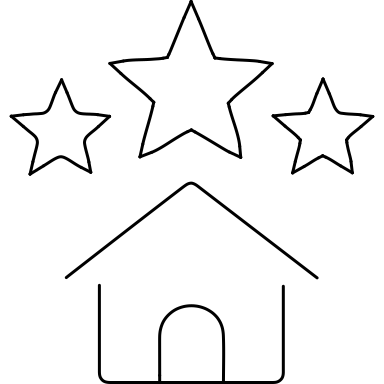
48px:
The two small rating stars became dots and the house was flattened. Restore three recognizable stars above an upright house.
pass · exception (automatic fail) · AUTHOR gpt-6
Worker thuan-mac · AUTHOR gpt-6 · Original / rejected / revised comparisons. Five strict passes and fifteen user-authorized visual exceptions; automatic findings retained.

The two small rating stars became dots and the house was flattened. Restore three recognizable stars above an upright house.
pass · exception (automatic fail) · AUTHOR gpt-6
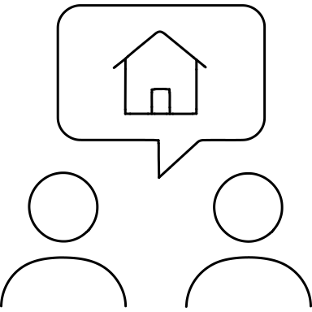
The house inside the speech bubble became a chevron and the couple became tiny face dots. Restore a complete house and two broader busts.
pass · exception (automatic fail) · AUTHOR gpt-6
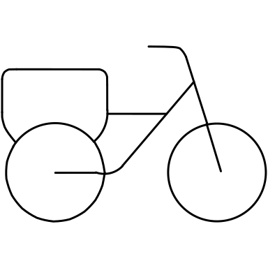
The cargo bike lost its frame and broad rear box; the box looked like a sign on a pole. Restore a cargo box over the rear wheel and a connected bicycle frame.
pass · exception (automatic fail) · AUTHOR gpt-6
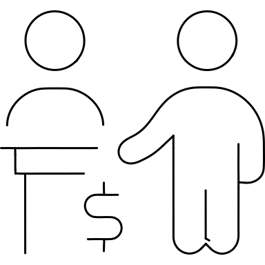
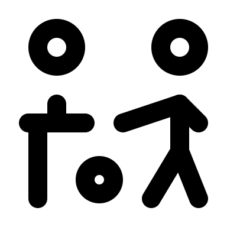
The payment cue was reduced to an unexplained dot and the receptionist disappeared behind a T. Restore two people, a counter and a dollar payment mark.
pass · exception (automatic fail) · AUTHOR gpt-6
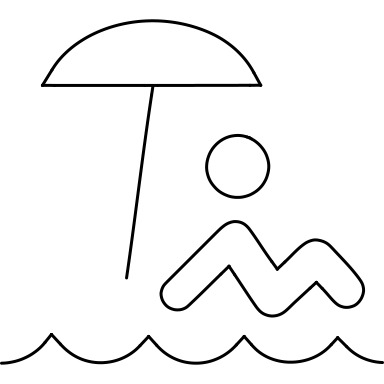
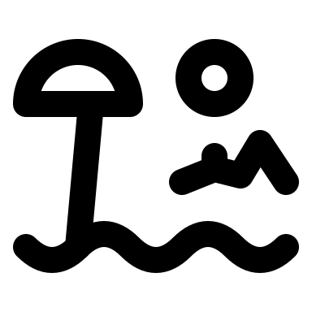
The swimmer/recliner was reduced to a floating angular mark and the umbrella nearly touched the water. Restore an articulated reclining body beneath a wide canopy.
pass · exception (automatic fail) · AUTHOR gpt-6
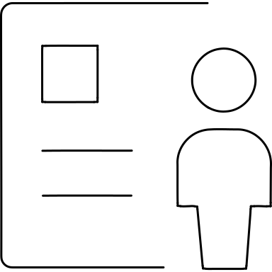
The page became an E-shaped bracket and the candidate looked like a small bucket. Restore a document outline, portrait panel, text lines and a clear candidate bust.
pass · exception (automatic fail) · AUTHOR gpt-6
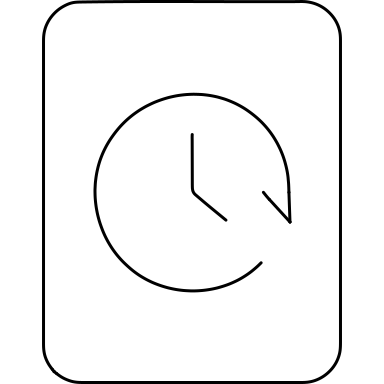
The history symbol lost the clock face and recognizable return arrow. Restore a circular clock with hands and a small clockwise return arrow on the portrait card.
pass · exception (automatic fail) · AUTHOR gpt-6
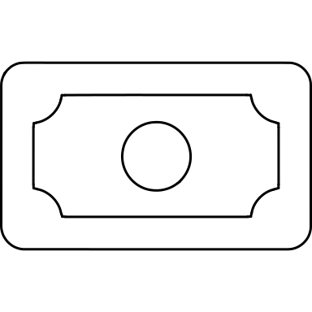
The banknote became a scalloped ticket. Restore a rectangular note with rounded corners, a central denomination medallion and balanced side marks.
strict pass · zero warnings · AUTHOR gpt-6
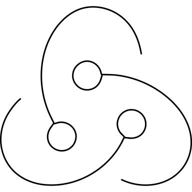
The Redux paths were disconnected and flattened into a generic S. Restore the three orbiting lobes and three hollow endpoint nodes.
pass · exception (automatic fail) · AUTHOR gpt-6
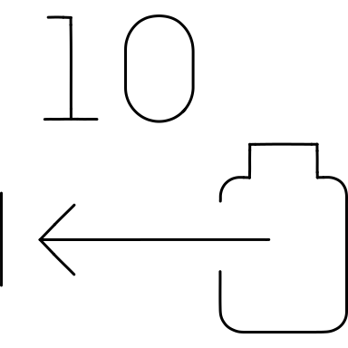
The number 10 became a bar and dot, and the battery became an angular bracket. Restore the range number, leftward distance arrow and battery silhouette.
pass · exception (automatic fail) · AUTHOR gpt-6
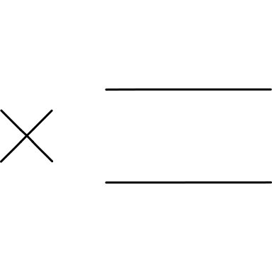
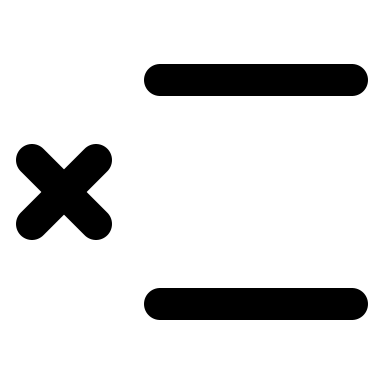
The isolated X and two rules no longer clearly described a table row. Restore a table grid with a delete X aligned to its middle row.
strict pass · zero warnings · AUTHOR gpt-6
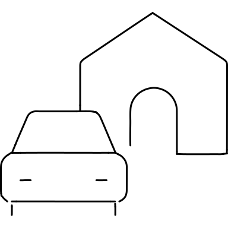
The foreground car looked like a bag and the house was only a roof arch. Restore a windshield, hood, wheels and a complete rear house.
pass · exception (automatic fail) · AUTHOR gpt-6
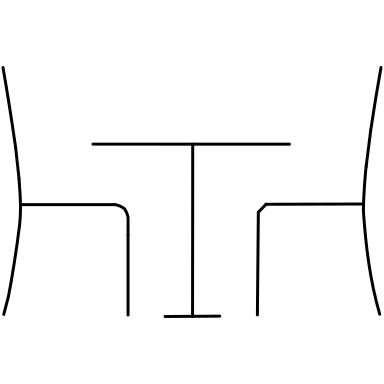
The chairs were reduced to inward hooks and the table was undersized. Restore matching seats, backs and legs around a broader pedestal table.
strict pass · zero warnings · AUTHOR gpt-6
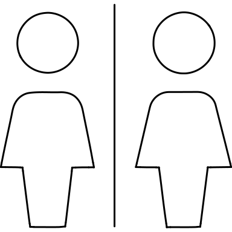
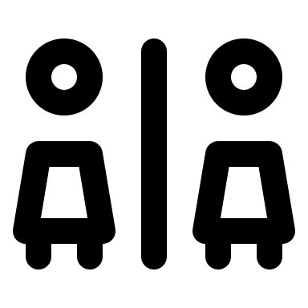
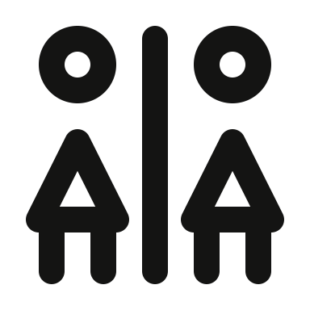
Both figures had tiny heads and stiff rectangular dress shapes. Restore the original pair of female restroom figures, round heads and flared dresses beside a divider.
pass · exception (automatic fail) · AUTHOR gpt-6
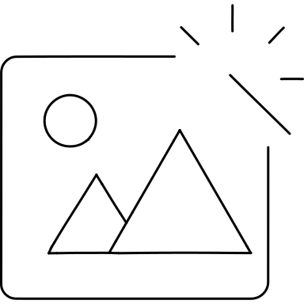
The retouch cue became disconnected dots and a slash over a generic mountain. Restore a landscape frame with sun, mountain range and a clear sparkle at the editing corner.
pass · exception (automatic fail) · AUTHOR gpt-6
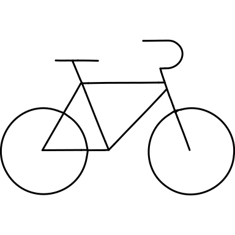
The wheels were undersized and the retro handlebar was a heavy hook. Restore larger wheels, the diamond frame, a slim saddle and curled handlebar.
pass · exception (automatic fail) · AUTHOR gpt-6
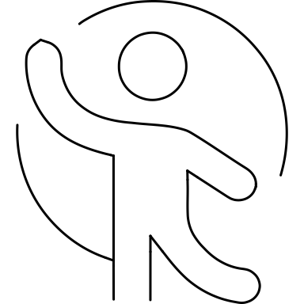
The gymnast lost the raised arm, long leg and flowing ribbon; it read like a seated person under a dome. Restore the dancing pose and near-circular ribbon sweep.
pass · exception (automatic fail) · AUTHOR gpt-6
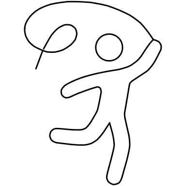
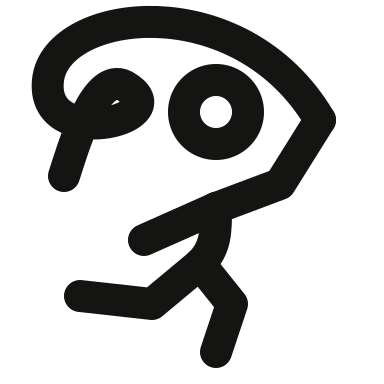
The gymnast became a squat seated shape and the ribbon lost its loop. Restore a raised hand, standing leg, bent back leg and an overhead ribbon loop.
pass · exception (automatic fail) · AUTHOR gpt-6
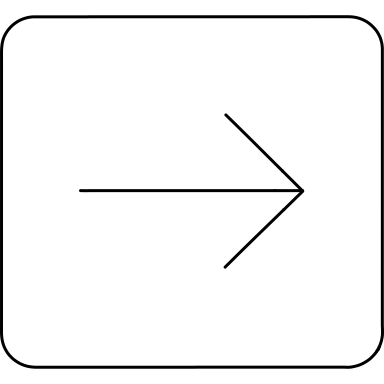
The rightward exit arrow was trapped inside a closed box. Open the bracket on the right and extend the arrow out through it.
strict pass · zero warnings · AUTHOR gpt-6
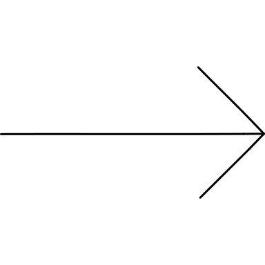
The destination line was entirely missing, leaving a plain right arrow. Add the terminal line and preserve the long rightward shaft.
strict pass · zero warnings · AUTHOR gpt-6